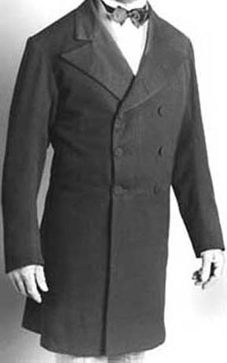
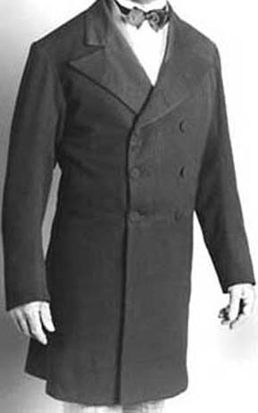

Day Wear
The loose fitting, conservative styles of the 1860's and 70's left little room for imagination when it came to gentleman's dress. The single and double-breasted frockcoats, with their full sleeves and skirts well to the knee, set the standard for what a man was to wear to the office or any daytime formal occasion.The waistcoats and trousers offered some relief with their variation in style and fabrics used; single and double breasted waistcoats were worn in subtle colours and patterns, either in contrast to or of the same cloth of the coat. Fabrics for trousers varied from black super-fine wool to large plaids, checks and solid colours in varying weaves.
A gentleman would not be seen out-of-doors without hat, gloves and often walking stick. The beaver fur-felt top hat was in common use while either cotton or kid gloves in off-white,beige or light tan covered the hand.
"The illustration represents the present form of frock-coat, a garment which once more resumes its proper and original position as the fashionable style of coat for morning wear."
Double Breasted Frock Coat
1855 - 1875
 

Click photo to view
Fully lined, 4 button style with waist seam and two inside pockets in skirt. Edges finished in narrow topstitching or braid.
In black or navy superfine wool with cotton sateen lining. Woolens in checks and plaids for everyday wear. Also available in Single Breasted style.
SB602
$795.00
SB602a with braid
$835.00
DB603
$795.00
DB603a
$835.00
Worn with waistcoat DB604 and trouser TR606
Sac Coat
1855 - 1875
Click photo to view
Loose cut 4 button, single breasted coat with piped or patch pockets. Front is lined in same fabric; back and sleeves unlined.
Available in linen or cotton.
SC601
$545.00
Worn with waistcoat SB605 and trouser TR606
Triple-Pleated Shirt
Click photo to view
Single pleated or triple pleated front dress shirt in 100% linen. Off-white.
In whole or half sizes.
SH608
$195.00
Detachable collar worn with shirt
DC610 cloth
$30.00
DC610a lintex disposable
$10.00
DC908b Gold Studs for collars
$5.00/set
Single Breasted Waistcoat
1855 - 1875
Fully lined, 7 button waistcoat, with lower welt pockets. Wool fronts, back in matching cotton with strap and buckle.
Wools in solids or striped, brown , grey, or blue.
SB605
$225.00
Double Breasted Waistcoat
1855 - 1875
Click photo to view
Fully lined, shawl collar,4 button waistcoat with two lower welt pockets. Fronts in wool or silk; back in matching cotton with strap and buckle. In shades of cream, grey or blue.
DB604
$235.00
Dress Trousers
1855 - 1875
Click photo to view
Men's dress trouser with button fly, side pockets, suspender buttons and back strap.
Woolens in plaids, checks or solids.
TR606
$235.00
Work Trousers
1855 - 1875
Button fly trouwer with waistband, side pockets and back strap.
In woolens and corduroy.
TR407
$210.00
Evening Wear
By the 1860's, the dresscoat had been relegated to strict use as evening formal wear. The double breasted style with button stand, notch collar and the front cut well to the back marked the definite styling of the coat. Most often black, with matching trousers and contrasting waistcoat, accompanied with the beaver top hat and white kid gloves, evening formal wear was defined in a way that would remain relatively unchanged for the next half century.
Double Breasted Dresscoat
1855 - 1875
Click photo to view
Three button, double-breasted with two inside pockets in tails and one inside breast pocket. Fully lined.
100% black superfine wool.
DC610
$855.00
Worn with waistcoat DWT610 and trouser TR606
Dress Waistcoat
1855 - 1875
Click photo to view
Button fly trouwer with waistband, side pockets and back strap.
In woolens and corduroy.
TR407
$210.00
Bow Tie
In black satin or silk
ACC060
$55.00
Stock with Bow
Click photo to view
In black satin or silk
ACC060a
$75.00